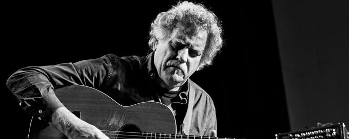

Ricardo Pellican
MÚSICO, DOCENTE Y PRODUCTOR ARTÍSTICO
MÚSICO, DOCENTE Y PRODUCTOR ARTÍSTICO
Ricardo Pellican, músico, compositor, pedagogo, nació el 13 de enero de 1956 en El Palomar, Morón, Provincia de Buenos Aires. tiene más de cincuenta años en la escena del Jazz nacional e internacional. Grabó más de cuarenta CD´s de Jazz. El último recientemente editado (2018): Pellican & Pellican in House en dúo junto a su hijo, el bajista Andrés Pellican. En la actualidad integra Pellican Jazz Quinteto, Pellican Jazz Dúo, Pellican Gypsy Trío, Loco el 22, y Pellican-Lund-Pellican, en los principales escenarios del mundo.
Profesor Superior de Guitarra, carrera de siete niveles (niveles anuales) terminada en diciembre del año 1979 en la Escuela Superior de Música Walter Malosetti. Recibió su título de manos de la prestigiosa Maestra de la Guitarra Clásica: Irma Constanzo. Participé en importantes festivales de Jazz de Sudamérica, Europa y África actuando con sus grupos y dictando Workshops.
Clínicas y/o Clases Magistrales (algunas grupales y otras personales) con los siguientes maestros de EEUU: Chuck Wayne, James Tobías, Will Bill Davison, Eric Gale, Joe Pass, Jim Hall, Herb Ellis, Alphonso Johnson, John Stowell, John Scofield, George Benson, Frank Gambale y Bill Smith; de Europa: Maurice Ferret (Francia), Hugo Rassmussen (Dinamarca), Ian Cruickshank (Inglaterra), Diddier Lockwood (Francia), Svend Asmussen (Dinamarca) y Jon Larsen (Noruega).


DuarCode©